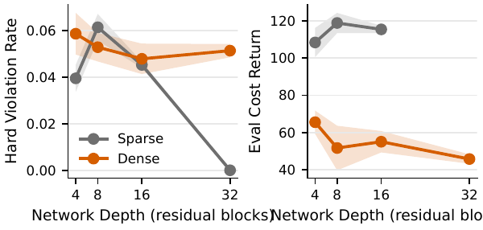
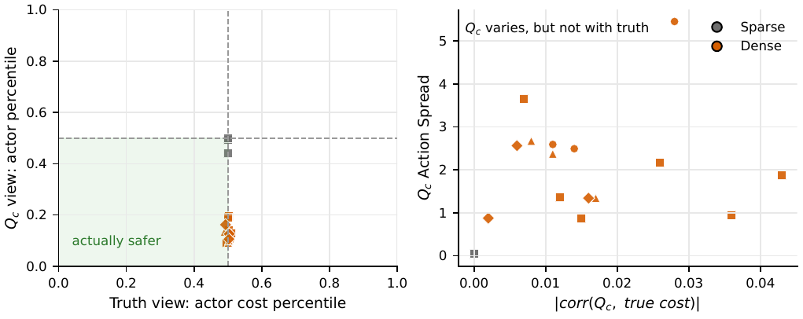
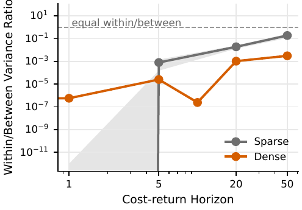
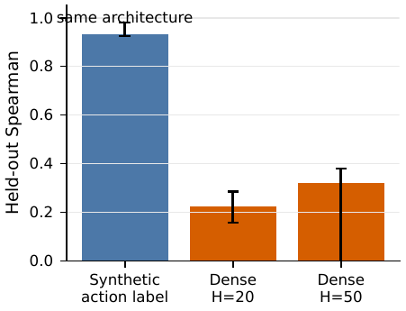
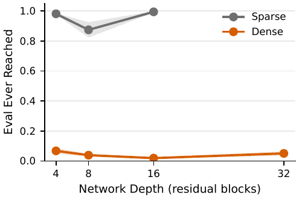

Summary
Depth helps goal-reaching in contrastive reinforcement learning, but this diagnostic asks whether that depth-scaling effect transfers to the constrained safety critic. Across sparse and dense safety supervision, depths 4 through 32, and sparse-vs-active PID variants, we find that the learned cost critic develops substantial action-dependent variation that is not aligned with true same-state counterfactual safety cost.
Depth does not fix safety.
Hard-violation and cost-return trends do not improve systematically with deeper cost critics.
Dense labels do not fix safety.
Dense proximity supervision still produces near-zero alignment with true counterfactual cost.
The actor exploits a spurious critic.
Actor actions score low under Qc, but remain random under true counterfactual cost.
Headline Matrix

Spurious Action Variation

Mechanism


Reach Context

Key Aggregate Numbers
The table below is copied from the paper build pipeline. Full CSV and TeX tables are available in data/table2_aggregate.csv.
| Regime | Depth | Hard | Reach | Actor Qc pct. | Actor true pct. | Corr. |
|---|---|---|---|---|---|---|
| Dense, sparse PID | 4-32 | 0.048-0.059 | 0.019-0.068 | 0.100-0.138 | 0.498-0.504 | near 0 |
| Dense, active PID sanity | 8 | 0.058 | 0.025 | 0.150 | 0.503 | -0.008 |
| Sparse, active PID | 4-16 | 0.039-0.061 | 0.874-0.994 | available at depth 8 | available at depth 8 | 0.000 |
Citation
Placeholder BibTeX. Replace with final venue metadata.
@misc{sr_cpo_depth_diagnostic,
title = {Network Depth, Safety Supervision, and the Action-Flat Cost Critic},
author = {Shahriar B. and collaborators},
year = {2026},
url = {https://sb322.github.io/sr-cpo-safety-gym/}
}